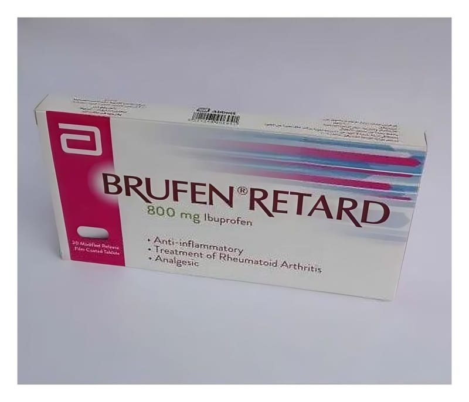

Brufen Retard 800 mg Uzatılmış Salımlı Film Kaplı Tablet, 14 Adet

Ne için kullanılır
KT · Bölüm 1• BRUFEN®; beyaz, yassı şekilli, film kaplı tablettir.
• BRUFEN®, 14 ve 28 film tablet içeren blister ambalajlarda takdim edilmektedir.
• Her bir film tablet 800 mg ibuprofen içerir.
• BRUFEN®’in etkin maddesi olan ibuprofen, non-steroid anti-e nflamatuvar ilaçlar (NSAİİ-steroid yapıda olmayan intihap önleyici) olarak adlandırılan ağrı kesici bir ilaç grubuna aittir.
• BRUFEN®bu özellikleri dolayısıyla, aşağıdaki durumlarda kullanılmaktadır: - Eklemlerdeki romatizmal iltihabi hastalıkların (romatoid artrit, osteoartrit ve ankilozan spondilit) belirti ve bulgularının düzeltilmesi, - Gut (damla) hastalığında görülen eklem iltihabı, - Akut kas-iskelet ağrıların rahatlatılması, - Cerrahi operasyondan sonra görülen ağrı, - Adet dönemi ağrılarının giderilmesi (primer dismenore).